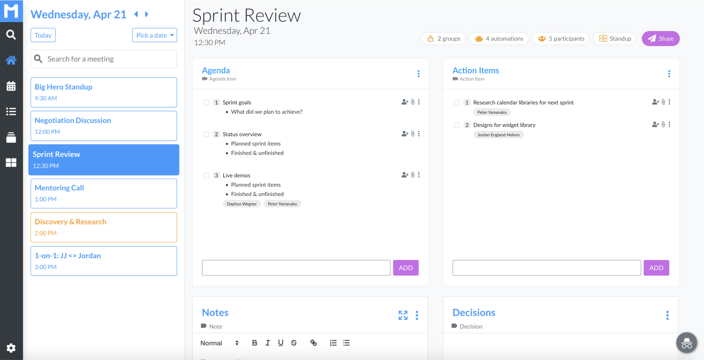
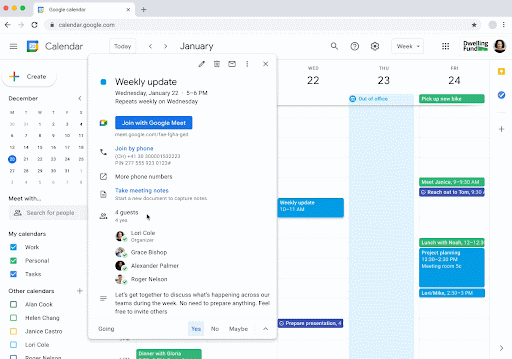

Meetly, a B2C startup that spun off from POPin, a B2B employee engagement and survey company
Reducing wasteful meetings with automated notes, powered by your calendar

Meetly was a meeting notes management system powered by your calendar.
Company
Duration
2 months of research, 2+ years of product development
my role
Only designer + research co-lead
Background 📖
Meetly began as a skunkworks project at POPin –– an employee survey and polling SaaS company .
I conducted user research with my PM that lead to the idea to leave POPin and found Meetly as a stand-alone product.
Problem space ❌
Knowledge workers loose too much time in inefficient and/or unnecessary meetings.
Solution ✅
A calendar-based note-taking app that promotes good meeting "hygiene" through automated gathering of agenda items, accountability around action items, and documentation of strategic decisions.
Outcome 📊
Over the next two years, with additional investment from Wonder Ventures, we built Meetly into a meeting and notes automation platform that ran on top of Outlook and Google Calendar.
3 apps
• web app
• Chrome extension
• monday.com plugin
5%
of users logged in 3+ times per week
Best New App award
2nd place in monday.com's App Store competition in 2020
Note templates linked directly to calendar events
Our philosophy was to leverage the work people already put into managing their calendar.
Tying notes to a meeting made retrieval and permission access simple.
This was 2 years before Google integrated Google Docs into Google Calendar in a similar way:

Rules for automated workflows
Our automation rules provide organizational value without requiring the meeting organizer to expend mental energy.

Prescriptive templates to promote efficient meetings
We wanted Meetly to be intuitive as a tool, but also prescriptive (even educational) when it came to good meeting hygiene.
When a user clicks on a meeting, it should be immediately obvious what they need to do – as a meeting organizer and as a participant.
How I got there
Discovery
Define
Design
Iterate
Targeting users with meeting-specific jobs-to-be-done
Focused efforts on office workers with lots of recurring meetings, project update meetings and cross-team meetings.
This meeting "super user" was our target audience.

Identifying themes and patterns
The insights from these interviews helped us define the problem space.

I don't want to manage
another tool.
App fatigue is real.
another tool.
App fatigue is real.
Allison Spears
HR professional
HR professional
Discovery
Define
Design
Iterate
how might we...
Improve meeting "hygiene"
It's difficult to require every meeting to have an agenda and action items.
People recognize the importance of agendas and action items, so why don't they always create them?
Increase accountability
Lack of accountability around tasks assigned & decisions made cause wide frustration amongst meeting participants.
Automate best practices
App fatigue is real. The more we can do for them automatically, the less users will feel like they are adopting a new tool.
How can we work in the background, taking care of tasks before users even think about them?
hypotheses to VALIDATE
Consumer product
There is a consumer need for something simpler than project management software, but more structured than text docs and todo lists.
Enterprise product
Companies would purchase and force adoption of a tool that encouraged, tracked, and improved meeting efficiency.
Balancing user needs with investor expectations
Listening to users and observing their behavior were the primary drivers of the product roadmap.
But the reality of needing to court investors heavily influenced some product decisions.
Discovery
Define
Design
Iterate
design principle #1
Be prescriptive, yet flexible
We wanted Meetly to be intuitive as a tool, but also prescriptive (i.e. educational) when it came to good meeting hygiene.
When a user clicks on a meeting, it should be immediately obvious what they need to do – as a meeting organizer and as a participant.
solution
Default notes structure
We automatically included cards for agenda, action items, notes and decisions.
This arrangement encouraged meeting best practices while allowing a user to remove, add or rename cards as needed.
solution
Customizable templates
Users could create custom card arrangements for different meeting types.
design principle #2
More organization, less work
We wanted to leverage energy that users were already putting into their calendars and other productivity tools.
The goal was integration into a user's existing meeting workflow, so that we bring value without additional cognitive load.
solution
Automate meeting management workflow
Our "Automations" feature provide organizational value without requiring the meeting organizer to expend mental energy.
solution
Leverage calendar to organize notes
Meeting notes live on top of a user's calendar events.
Meeting information stays in sync. Cross-linking allows you to find your notes via your calendar.
design principle #3
Make it easy to find and share notes
A common pain point we observed was meeting minutes getting shared via email –– as attachments or links to services that required logging in.
This made it difficult to reference notes later on and contributes to email clutter.
solution
Robust search
The ability to search across all notes and meetings makes it easy to reference past topics.
solution
Meeting groups
Grouping meetings together around a topic, team or project was another way users could organize and quickly reference content.
Discovery
Define
Design
Iterate
Learning from users
Scrappy usability testing
With such a small initial user base and product footprint, we were fine with deploying less-than-perfect features to production.
I would schedule calls with users immediately after deploying a change to production so I could observe them interact with the feature for the very first time.
Observing recorded user sessions daily
Every morning I watched several dozen user-session-replay videos captured via LogRocket.
These low-cost "usability tests" provided instant feedback from real users in a "game situation".
Experimenting with paywalls
Hiding new feature ideas behind paywalls and "Notify me" forms was an inexpensive way of testing how desirable those features were to real users.
What I learned
Mistakes
Chasing enterprise customers
Pursuing enterprise clients early on divided our energies and focus.
We ended up wasting a lot of dev resources on security and privacy, which was less important to our self-serve customers.
Solutions in search of a problem
Some of our features proved to be clever solutions to problems people weren't actually willing to pay for to fix.
Confusing a "human problem" for a "technical problem"
Meeting inefficiency is a huge problem, but it's a problem of human psychology. A "solution" is more complex than simply providing better tools.
Lessons
Anecdotes are not proof
They are valuable for inspiring further investigation, but they need to be corroborated with quantitative evidence before giving them weight.
Importance of product vision
User needs should inform product direction (true!) but it's also important to have a vision and stick to it until you have validated that it is (or is not) on target.